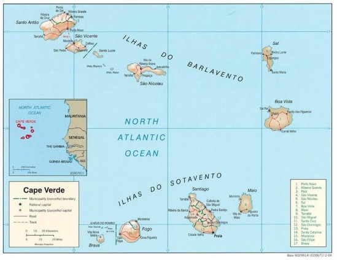
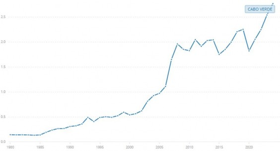
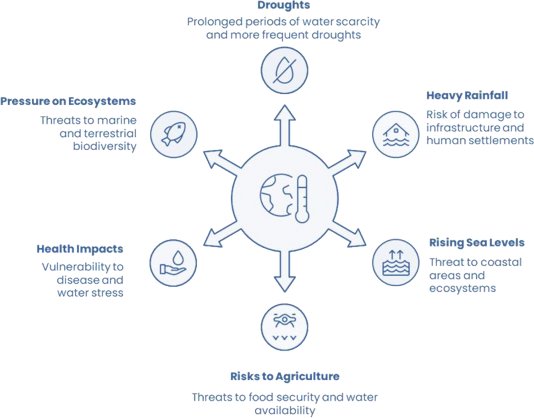
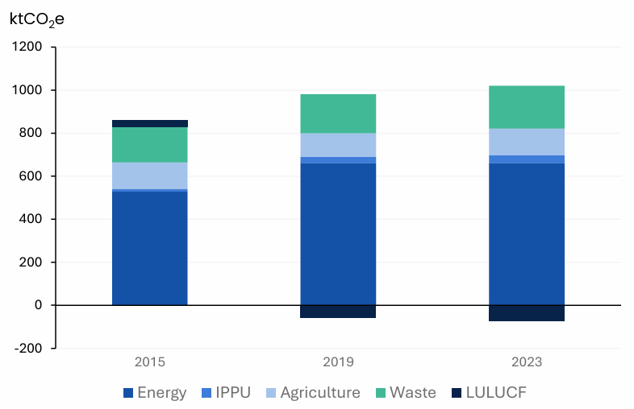
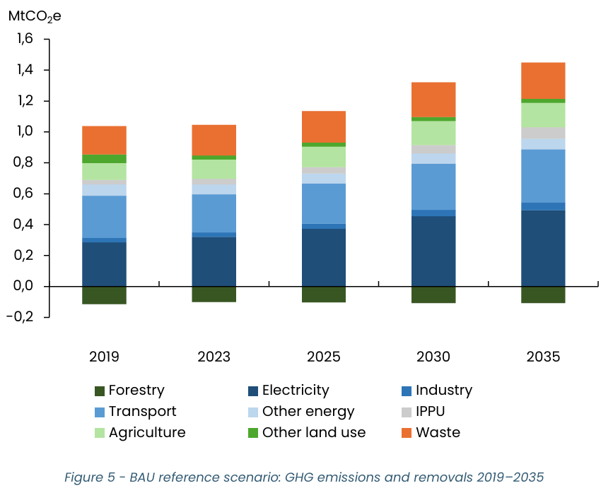
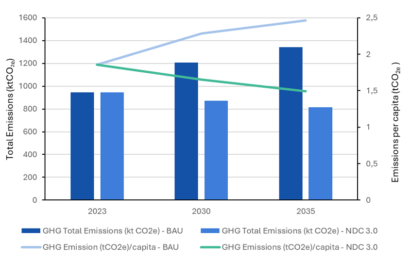
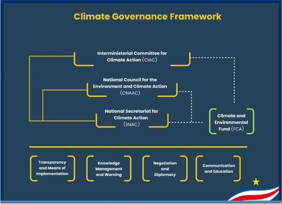
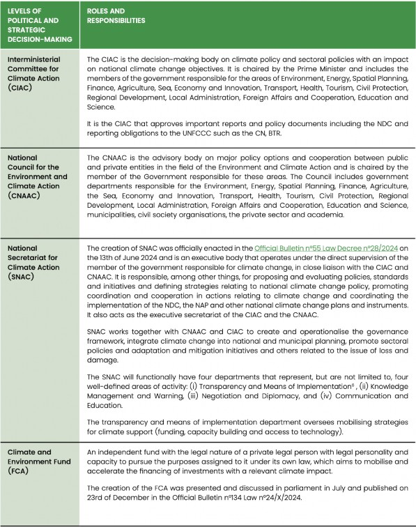
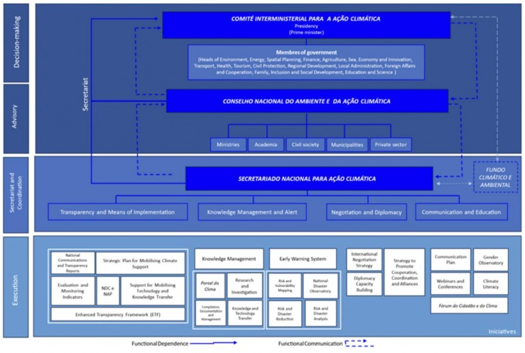
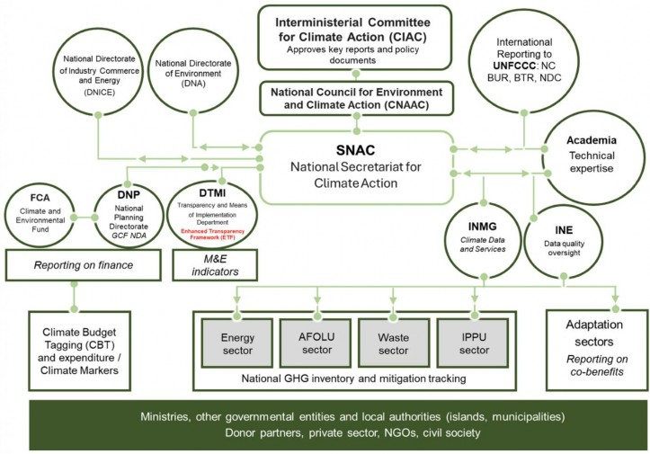

Cabo Verde Nationally Determined Contribution 3.0 (NDC)
2025
Cabo Verde Nationally Determined Contribution 3.0 (NDC)
i
The Government of Cabo Verde expresses its appreciation to the institutions and individuals who contributed to the preparation of this Nationally Determined Contribution (NDC).
Political coordination was provided by the Inter-ministerial Council for Climate Action (CIAC). National technical coordination was led by the National Secretariat for Climate Action (SNAC) in close collaboration with the United Nations Development Programme (UNDP). Inventory coordination was undertaken by the National Directorate for Industry, Trade and Energy (DNICE), coordinated by Jaqueline de Pina, with support from the National GHG Inventory Team.
The Government acknowledges the work of the drafting team: Catarina Vazão, Eduardo Santos, Alexandre Rodrigues, Joelle Dahm, Carolina Estrada and Carlos Moniz. It also thanks sectoral ministries and agencies, municipalities, civil society organizations, private-sector representatives, academia, and youth and women’s groups for their inputs through consultations and technical exchanges.
The United Nations System in Cabo Verde is gratefully recognized for its financial support to the NDC update process.
The Government of Cabo Verde remains solely responsible for the content of this document; the views expressed do not necessarily reflect those of supporting partners.
Acronyms
AFOLU |
Agriculture, Forestry and Other Land Use |
BAU |
Business-as-Usual |
BTR |
Biennial Transparency Report |
CBDR-RC |
Common but Differentiated Responsibilities and Respective Capabilities |
CIAC |
Inter-ministerial Council for Climate Action |
CMIP6 |
Coupled Model Intercomparison Project Phase 6 |
CO₂e |
Carbon Dioxide Equivalent |
CSU |
Social Registry (Cadastro Social Único) |
EEBC |
Energy Efficiency in Buildings Code |
ENRRD |
National Strategy for Disaster Risk Reduction |
ETF |
Enhanced Transparency Framework |
EV |
Electric Vehicle |
FAO |
Food and Agriculture Organization of the United Nations |
F-gases |
Fluorinated Gases |
GACMO |
Greenhouse Gas Abatement Cost Model |
GDP |
Gross Domestic Product |
GHG |
Greenhouse Gas |
GHGIS |
Greenhouse Gas Inventory System (or National GHG Inventory System) |
GWP |
Global Warming Potential |
HDI |
Human Development Index |
HFC |
Hydrofluorocarbon |
ICAO |
International Civil Aviation Organization |
ICTU |
Information for Clarity, Transparency and Understanding |
INE |
National Statistics Institute |
INMG |
National Institute of Meteorology and Geophysics |
IPCC |
Intergovernmental Panel on Climate Change |
IPPU |
Industrial Processes and Product Use |
iNDC |
Intended Nationally Determined Contribution |
LED |
Light-Emitting Diode |
LULUCF |
Land Use, Land-Use Change and Forestry |
LT-LEDS |
Long-Term Low Emission Development Strategy |
MEPS |
Minimum Energy Performance Standards |
MRV |
Monitoring, Reporting and Verification |
NAP |
National Adaptation Plan |
NDC |
Nationally Determined Contribution |
SDG |
Sustainable Development Goals |
PDSE |
Master Plan for Cabo Verde’s Energy Sector |
PEDS |
Strategic Plan for Sustainable Development |
PENGeR |
National Strategic Waste Management Plan |
PISCCA |
Sustainable Waste Management Plan |
PNSE |
National Programme for Energy Sustainability |
PV |
Photovoltaic |
SAF |
Sustainable Aviation Fuel |
SDG |
Sustainable Development Goal |
SIDS |
Small Island Developing States |
SNAC |
National Secretariat for Climate Action |
SNTC |
National Climate Transparency System |
SSP |
Shared Socioeconomic Pathway |
T&D |
Transmission and Distribution |
UNDP |
United Nations Development Programme |
UNFCCC |
United Nations Framework Convention on Climate Change |
WEF |
World Economic Forum |
Cabo Verde reinforces its climate ambition by updating its Nationally Determined Contribution (NDC 3.0), accelerating the transition to resilient, inclusive and low- carbon development. In a context of high vulnerability to climate change and dependence on natural resources and climate-sensitive sectors, the country reaffirms its commitment to the Paris Agreement and the global goal of limiting warming to 1.5°C, contributing to the protection of populations and ecosystems and promoting new opportunities for sustainable growth.
Enhanced Ambition and Key Contributions
Cabo Verde increases its mitigation and adaptation ambition, with more comprehensive targets consistent with the national goal of achieving net zero emissions by 2050, as defined in the LT-LEDS CV 2050:
By 2030:
▶ 18% reduction in emissions below BAU (unconditional)
▶ Up to 28% reduction with international support
(≈ 218 to 334 ktCO₂e by 2030 of reductions, including LULUCF)
By 2035:
▶ 18% reduction in emissions below BAU (unconditional)
▶ Up to 39% reduction with international support
(≈ 242 to 528 ktCO₂e by 2035 of reductions, including LULUCF)
Mitigation actions prioritise accelerating the energy transition, decarbonising transport, efficient use of energy resources, sustainable waste management, reducing industrial emissions and expanding ecosystems as carbon sinks.
In terms of adaptation, NDC 3.0 reinforces the focus on water security, coastal resilience, health, ecosystem protection, resilient infrastructure, and climate risk management, ensuring that communities and essential services are prepared for a rapidly changing climate.
Cabo Verde also reinforces its commitment to a fair and inclusive transition that is responsive to gender, youth, children and the most vulnerable populations, ensuring that climate action contributes to reducing inequalities and increasing social and territorial resilience. Implementation will be accompanied by improved governance and transparency instruments, including the first Biennial Transparency Report (BTR) and the strengthening of national monitoring and reporting systems.
6 Mitigation Contributions: |
#1 Reduce energy intensity and promote efficiency |
#2 Increase renewable energy targets |
#3 Reduce the carbon intensity of land mobility and aviation |
#4 Promote sustainable waste management |
#5 Promote the natural sink function of ecosystems |
|
#6 Promote the replacement of fluorinated gases with alternatives with lower global warming potential |
6 Adaptation Contributions |
|
#1 Reduce climate change-induced water scarcity and strengthen climate resilience to water-related risks |
|
#2 Achieve climate-resilient agricultural and food production, as well as food supply and distribution |
|
#3 Achieve resilience against the impacts of climate change on health, and promote climate-resilient health services |
|
#4 Reduce the impacts of climate change on ecosystems and biodiversity, and accelerate the use of ecosystem-based adaptation and nature-based solutions |
|
#5 Increase the resilience of infrastructure and human settlements to climate change impacts, in order to ensure basic and continuous essential services for all |
|
#6 Create an enabling environment to facilitate the integration of adaptation into planning and budgeting, conduct climate risk and vulnerability assessments, and establish multi-hazard early warning systems |
Climate change is an existential and systemic challenge of our time. The world is witnessing an intensification of extreme events - such as prolonged droughts, unprecedented storms, shifting precipitation patterns, sea level rise – with increasing pressure on ecosystems and human livelihoods. These phenomena highlight the urgent need for decisive global and national responses. Cabo Verde positions itself as a proactive Small Island Developing State (SIDS), advancing integrated climate action through coherent national policies and strategic international partnerships.
For SIDS, and particularly Cabo Verde, climate risks are especially acute. The country’s Insularity, limited land area, geographical remoteness, and high dependence on climate-sensitive sectors such as agriculture, fisheries, water and tourism, as well as heavy reliance on external energy sources, make the archipelago highly vulnerable to climate disruptions.
Cabo Verde has been fully integrating the global climate agenda, anchoring its commitments under the Paris Agreement. By becoming a party to the Paris Agreement, the country has committed to developing and communicating its Nationally Determined Contributions (NDCs) as the main instrument for defining mitigation and adaptation strategies aligned with the goal of limiting global warming to less than 1.5 °C.
In 2015, Cabo Verde began its journey with the submission of its Intended Nationally Determined Contribution (iNDC), a document that marked the first formal expression of the country's commitment under the Paris Agreement. The iNDC established Cabo Verde's ambitions and strategic orientation in terms of mitigation and adaptation, identifying priority sectors, namely energy, waste, agriculture, water resources and coastal areas, and defining the first emission reduction scenarios and international support needs in terms of financing, technology and capacity building.
This commitment was significantly reinforced in 2020 with the submission of NDC 2.0 (adopted in 2021), which increased ambition, expanded sectoral coverage and strengthened institutional mechanisms. NDC 2.0 introduced more ambitious mitigation targets, broadened adaptation sectors and reinforced transparency through an improved monitoring, reporting and verification (MRV) framework. It was supported by expanded interministerial coordination, the establishment of sectoral climate units and the mainstreaming of climate action across policy domains. Under NDC 2.0, Cabo Verde committed to reducing emissions by 18% compared to a business-as-usual scenario by 2030—or 24% with international support—and set a long-term objective of carbon neutrality by 2050. At the same time, Cabo Verde has been promoting continuous national action to integrate climate resilience and low- carbon development into its policy and planning framework. Since the publication of the National Adaptation Programme of Action (NAPA) in 2007, the country has identified priority measures in the areas of water management, agriculture, coastal zones and ecosystem protection. These initiatives culminated in the drafting and approval of the National Adaptation Plan (NAP Cabo Verde 2022–2030), which aligns adaptation strategies with the NDC and the national development vision.
Cabo Verde has also been strengthening its capacity for emissions reporting and climate transparency through the submission of its first Biennial Update Report (BUR). This instrument includes more robust greenhouse gas inventories, better institutional coordination and more consistent data systems, and also contributes to the design and review of mitigation and adaptation measures.
Climate governance in Cabo Verde has evolved progressively, based on strategic and regulatory instruments that ensure consistency between climate policy and national development. Resolution No. 16/2009 establishes the Interministerial Committee on Climate Change (CIAC), the body responsible for coordinating national climate policy and liaising with the UNFCCC, ensuring alignment with international commitments and interministerial coordination.
Since then, the country has consolidated its framework for action through several sectoral plans and strategies that integrate the climate variable into their policies, programmes and targets.
A key milestone in this process is the Long-Term Low Greenhouse Gas Emissions Development Strategy for Cabo Verde (LT-LEDS CV 2050), a crucial document that provides a long-term roadmap to guide the country’s decarbonisation pathway towards carbon neutrality. The LT-LEDS establishes the strategic foundations for deep emission reductions across all sectors and serves as a guiding framework for successive NDCs, ensuring that each iteration advances in alignment with the long- term vision of sustainable, low-emission development.
Through this coherent architecture, Cabo Verde continues to consolidate a results- oriented climate governance model, linking public policy, sectoral planning and climate finance, while leveraging strategic international partnerships and national innovation.
In 2025, Cabo Verde will submit its updated Nationally Determined Contribution (NDC 3.0), further reinforcing ambition and previous commitments in accordance with Article 4(11) of the Paris Agreement. NDC 3.0 builds on all these achievements, advancing a just transition and inclusive climate-smart development where sustainability, environmental stewardship and social well-being go hand in hand— setting a benchmark for SIDS and for broader international climate action.
Cabo Verde is an archipelago consisting of ten islands, nine of which are inhabited, and several uninhabited islets, located in the southern North Atlantic, off the coast of Senegal and Mauritania, between parallels 14° and 18° north and meridians 16° and 22° west, approximately 500 km from the African continent. The archipelago consists of ten islands, nine of which are inhabited, and several uninhabited islets, divided into two groups according to their location in relation to the prevailing winds:
The Barlavento group, located to the north, consists, from west to east, of the islands of Santo Antão, São Vicente, Santa Luzia (uninhabited), São Nicolau, Sal and Boa Vista. This group also includes the islets of Branco and Raso, located between Santa Luzia and São Nicolau; the islet of Pássaros, in the bay opposite the city of Mindelo, on the island of São Vicente; the islet of Rabo de Junco, off the coast of the island of Sal; and the islets of Sal Rei and Baluarte, off the coast of the island of Boa Vista.
The Sotavento group, to the south, is formed, from east to west, by the islands of Maio, Santiago, Fogo and Brava. This group also includes the islet of Santa Maria, located opposite the city of Praia, the capital of Cabo Verde, on the island of Santiago, as well as the islets of Grande, Rombo, Baixo, de Cima, do Rei, Luís Carneiro and Sapado, about 8 km from the island of Brava, and the islet of Areia, off the coast of the latter.

Due to its geographical location, Cabo Verde is influenced by the following atmospheric systems: the North Atlantic Subtropical High, the Northeast Trade Wind belt, the Trade Wind Inversion Layer, the Intertropical Convergence Zone and the Upper Level East Winds, which determine the country's climate throughout the year.
Cabo Verde’s geographic location makes it prone to several climate-related incidents. The islands are increasingly exposed to tropical storms and occasional hurricanes due to their position in the Atlantic hurricane corridor. The arid and semi- arid climate contributes to frequent droughts and irregular rainfall. Coastal zones are vulnerable to sea-level rise and erosion, while surrounding warm waters increase the likelihood of coral bleaching and marine ecosystem stress.
Cabo Verde’s socioeconomic profile—characterized by a young population, dynamic human capital, and service-based economy—shapes its capacity to address climate vulnerability and promote sustainable, inclusive growth.
According to demographic projections by the National Statistics Institute (INE, 2024), Cabo Verde had a resident population of 506,595 in 2022. The demographic structure shows an average age of 30.9 years and a median age of 28.0 years, reflecting a young population, albeit one that is gradually ageing. Average life expectancy is 69.9 years for men and 78.6 years for women, placing Cabo Verde among the African countries with the best longevity indicators (INE, 2024).
The population is unevenly distributed across the islands: the municipalities of Praia and São Vicente account for 29.8% and 15.4% of the total population, respectively, while the municipalities of Tarrafal de São Nicolau and Santa Catarina do Fogo account for less than 2% each (INE, 2024). The average national population density is 125.6 inhabitants per km², but in the most populated islands, such as Santiago (285 inhabitants/km²) and São Vicente (344 inhabitants/km²), the pressure on the territory is significantly higher. The demographic concentration in coastal and urban areas, especially Praia and São Vicente, as well as rapid rural-urban migration and poverty, increases exposure to climate risks such as sea-level rise, coastal erosion, and extreme weather events, demanding integrated planning for resilience and disaster risk reduction
The Cabo Verdean economy remains strongly oriented towards the service sector, which accounted for 69.0% of Gross Value Added (GVA) in 2022. This sector is driven by trade, accommodation and catering, reflecting the importance of tourism as the main economic driver. The secondary sector (industry and construction) contributed 11.1%, while the primary sector (agriculture, animal production, hunting, forestry and fishing) accounted for only 5% of GDP (INE, 2024). Despite its modest GDP share, the agricultural and fishing sectors underpin rural food security and are focal points for climate adaptation and resilience policies.
Cabo Verde's GDP reached 235,628 million Cabo Verdean escudos (ECV) in 2022, representing real growth of 13.6% over the previous year and showing a strong recovery after the impact of the coronavirus disease (SARS-CoV-2) pandemic. Per capita GDP stood at around 465,000 Cabo Verdean escudos (approximately US$4,400).

Figure 2 - Cabo Verde GDP Source: World Bank Group
Remittances from emigrants continue to play a decisive role in the Cabe Verdean economy, contributing to macroeconomic stability and family well-being. In 2022, these amounted to 29,984 million Cabo Verdean escudos (ECV), corresponding to around 12.7% of Gross Domestic Product (GDP). The Eurozone accounted for 64% of remittances received, with flows from Portugal, France and Luxembourg being particularly significant (INE, 2024).
Employment in Cabo Verde is mainly concentrated in services, particularly in trade and tourism. In 2022, the accommodation and catering sector employed 16,944 people, contributing to an overall increase of 22% in the number of people employed by companies compared to 2021 (INE, 2024). The island of Santiago, followed by Sal and São Vicente, accounted for more than 80% of formal employment.
Cabo Verde has made remarkable progress in education over the past decades, reflecting the country’s strong commitment to human development and social inclusion. According to the Statistical Yearbook of Cabo Verde 2022 (INE, 2024), the national education system enrolled 121,553 students in basic education, 44,759 in secondary education, and 12,697 in higher education. The total number of teachers reached 7,614, 59.1% of whom were women, demonstrating the high level of female participation in the education sector.
Literacy levels also show substantial progress. The adult literacy rate (15 years and above) is estimated at over 85%, while the youth literacy rate (15–24 years) approaches 98% (INE, 2024). These achievements position Cabo Verde among the top-performing African countries in education and highlight human capital as a cornerstone of sustainable development.
In terms of human development, Cabo Verde recorded a Human Development Index (HDI) of 0.668 in 2025, placing it in the medium human development category and above the average for West Africa (UNDP, 2025). The country’s HDI performance reflects strong results in education and life expectancy, although economic vulnerability and regional inequality continue to constrain progress.
Gender equality remains a central pillar of Cabo Verde’s social and development policy. Women represent more than 50% of the population, exhibit higher literacy and school enrolment rates than men in several education levels, and are well represented in public administration and higher education (INE, 2024; UN Women, 2023). Nevertheless, they remain underrepresented in leadership roles and face barriers in access to credit, land ownership, and economic opportunities.
While children are among the groups susceptible to the impacts of climate change— such as potential disruptions in access to water, health, and education due to extreme weather events — Cabo Verde has prioritized protective and inclusive policies that strengthen the resilience of its younger generations. Enhancing public initiatives
focused on child health, nutrition, and education remains central to safeguarding future generations and consolidating social progress. Furthermore, Youth face increased vulnerability to climate-induced migration and instability in rural and peri- urban areas due to limited access to employment, education and decision-making.
Persons with Disability often face systemic barriers that hinder access to climate information, emergency services and resilient infrastructure. People living in poverty face heightened exposure to climate risks due to inadequate housing solutions, poor access to water and sanitations and reliance on climate-sensitive livelihoods, while migrants displaced by drought and coastal erosion are at risk of facing barriers to social protection and basic services.
Through a strong commitment to human development and social inclusion, Cabo Verde strives for a just transition, ensuring that all residents, especially the most vulnerable, play an active role in shaping a climate-resilient future.
Cabo Verde’s climate regime is fundamental to the country’s vulnerability and adaptive capacity, shaping both socioeconomic development and policy priorities. Continuous monitoring and detailed climate analysis provide the scientific foundation for informed risk management, resilience planning and effective climate action.
Cabo Verde’s climate is characterised by a tropical arid and semi-arid regime, with marked inter-annual and spatial variability in rainfall and temperature. Historical climate analyses reveal a consistent warming trend across the archipelago over the past decades. Average air temperature has increased by approximately 0.14 °C per decade, corresponding to an overall warming of around 0.7 °C over the past 50 years. However, localised observations indicate stronger warming, with the mean air
temperature rising by up to 1.0 °C, and minimum temperatures increasing by about 1.5
°C — suggesting warmer nights and early mornings across several islands.
Observed temperature increases and rainfall variability heighten the urgency for climate-informed water management and agricultural adaptation strategies.
In contrast, rainfall patterns have shown high variability and no statistically significant long-term trend. While the national average points to a slight decrease in total annual precipitation, some local stations recorded minor positive trends. Overall, rainfall remains irregular, concentrated between August and October, and interspersed with extended dry periods that exacerbate water scarcity and land degradation.
Analysis of extreme weather events indicates a significant increase in the frequency of heatwave days, particularly in the Sal Island reference station of the National Institute of Meteorology and Geophysics (INMG). The number of days classified as “severe” and “extreme” heat events has increased markedly since the 1990s. Similarly, the frequency of heavy rainfall events (above 20 mm per day) with potential for local flooding has increased in most monitoring stations. In Praia, the number of such days rose by about 25% between 1961–1990 and 1991–2020.
Cabo Verde has also experienced prolonged droughts as a recurrent hazard, with one of the most severe events recorded in 2017, more than four decades after the previous comparable episode. Recent multi-year droughts have resulted in significant agricultural losses and heightened stress on rural water supply systems, underscoring the cross-sectoral impacts of climate extremes. These trends underscore the country’s growing exposure to climate extremes, including heat stress, erratic rainfall, and multi-year droughts that affect agriculture, water resources and rural livelihoods.
Cabo Verde participates in regional early warning initiatives and invests in strengthening meteorological infrastructure to increase preparedness and adaptive capacity. Analysis of disaster loss data and risk mapping shows that improved forecasting and community engagement are critical to reducing vulnerability to climate shocks.
Climate model projections indicate that Cabo Verde will experience continued warming throughout the 21st century, with magnitude depending on the global emissions pathway. Under the high-emissions scenario (SSP5-8.5), annual mean air temperature is projected to rise by more than 3.0 °C by 2100, compared to the 1961– 1991 baseline. Even under the low-emissions scenario (SSP1-2.6), the expected warming reaches around 1.5 °C.
Projections from the Coupled Model Intercomparison Project Phase 6 (CMIP6) further suggest a decline in total annual rainfall of up to 30% by the end of the century under the SSP5-8.5 scenario. This reduction would intensify aridity, increase evapotranspiration, and exacerbate drought and water stress conditions across the islands.
Results from regional dynamic downscaling confirm the general warming trend but present some differences in precipitation projections. While global models indicate overall drying, the regional model projects localised increases in rainfall under the low-emission scenario (SSP1-2.6), particularly in the southern part of the country. Under the high-emission scenario (SSP5-8.5), the model points to a reduction in rainfall over most areas, with only limited increases in the south.
Spatially and seasonally, warming is not uniform. The strongest temperature anomalies are projected for the August–October period, coinciding with the traditional rainy season. During these months, warming could reach 2.0 °C under SSP1-2.6 and up to 3.5 °C under SSP5-8.5, particularly in the northeastern and eastern islands. Such changes would further stress freshwater availability, ecosystem integrity, and food security.
Understanding these patterns is essential for shaping effective, locally tailored adaptation measures and prioritizing investment in climate resilience, linking scientific evidence directly to policy choices and community action.
Understanding observed and projected climate trends is essential to guide national planning and risk management. Cabo Verde has been strengthening climate monitoring and vulnerability assessment in order to integrate scientific knowledge into the definition of adaptation priorities. In this context, the climate profile presented supports the identification of the main risks affecting the country and requiring urgent action to protect populations, economic sectors and ecosystems. The following figure summarises these risks and their cross-cutting impacts on national development
.

Figure 3 - Main climate risks affecting Cabo Verde
In recent years, Cabo Verde has been actively working to make progress on climate action. To this end, it has developed policies and equipped itself with the necessary framework and instruments to realise the commitments made when the Paris Agreement was signed, but above all to face the climate challenges.
In this sense, the Government’s growing concern with climate issues has led to the gradual integration of climate into plans, policies and strategies:
The Government responded to the country’s challenges with a Strategic Plan for Sustainable Development (PEDS) for 2017-2021, which called for structural transformation with a view to long-term sustainable development and resilience. The PEDS II (2022-2026) recognised the urgency of climate action and includes a climate pillar, the achievement of which will require high capital investments in key transformation sectors, as well as adequate planning and budgeting. There is already a high-level commitment to develop strategic and innovative approaches to secure additional funding and build the necessary partnerships towards sustainable and inclusive development.
The NDC sets out the country’s climate goals and commitments under the 2015 Paris Agreement. The Agreement was signed by Cabo Verde in 2016 and ratified in 2017 through Resolution 35/IX/2017. The first updated NDC was submitted to the United Nations Framework Convention on Climate Change (UNFCCC) in April 2021 and is the guiding document for climate action until 2030. Cabo Verde began updating its NDC for submission to the UNFCCC in 2025.
The NAP approved in October 2022 comes as a response to the gaps and needs identified in terms of building climate resilience, establishing as one of the main objectives the creation of an enabling environment. This will facilitate the integration of adaptation into all planning and budgeting processes and to ensure that investments are climate-proof.
Cabo Verde is demonstrating the importance it attaches to transparency with the submission in May 2024 of its first Biennial Updated Report (BUR) and the preparation of the Fourth National Communication (4CN).
Cabo Verde is proposing a Framework Climate Law, which aims to institutionalise comprehensive national and international commitments to address climate change. This proposal defines climate rights and duties of all national stakeholders, ensuring a coordinated approach to climate action.
What’s more, the progress made in setting up a National System on Climate Transparency (SNTC) should be highlighted to have a strengthened framework for systematising future information and monitoring climate action linked to the implementation of the NDC through the Biennial Transparency Report (BTR). One of the functions of the BTR will be to monitor external flows of funds contributing to climate action and assess future funding needs.
Cabo Verde’s LT-LEDS 2050, presented in July 2024, will soon be approved and includes an implementation and monitoring plan and a funding mobilisation strategy. The LT-LEDS provides the long-term framework within which Cabo Verde’s NDCs set successively ambitious -or “enhanced” - targets over five- year periods with the aim of achieving carbon neutrality by 2050. The total amount estimated under the LT-LEDS for mitigation up to 2050 is 3.4 billion USD.
The National Strategy for Disaster Risk Reduction (ENRRD) 2018-2030 responds to and makes effective a series of national instruments and policies relevant to the implementation of the various elements and dimensions of disaster risk reduction. It provides the mechanisms to align, validate and strengthen policies, strategies, regulations and other instruments relevant to disaster risk reduction, such as planning, building standards, sustainable management of natural resources, environmental conservation and protection of ecosystems, social protection systems and public health, among others. These instruments are the incentives and sanctions to strengthen compliance to reduce exposure and vulnerability.
Cabo Verde is gradually incorporating climate-related goals and objectives into its national and sectoral development strategies. Several national strategies have taken climate considerations into account, namely those relating to water, such as the National Strategic Plan for Water and Sanitation (PLENAS), waste, such as the National Strategic Plan for Waste Management (2016 - 2030), health, such as the National Plan for Health Adaptation to Climate Change 2023-2027 (PNASMC), energy, such as the Master Plan for Cabo Verde’s Energy Sector 2018-2040 (PDSE) and the National Programme for Energy Sustainability 2021-2026 (PNSE), blue economy, such as the Policy Charter for the Blue Economy, which guides the sustainable use of marine and coastal resources, promoting a balance between economic growth, ecosystem conservation and climate resilience.
Cabo Verde developed an Action Plan for CO₂ Reduction in International Aviation (2019 - 2025), drawn up in accordance with International Civil Aviation Organisation (ICAO) guidelines, which aims to reduce emissions from the aviation sector through technological and operational measures.
Cabo Verde is preparing to integrate the climate budget marking process on its investment projects and is aware of the importance of preparing its budget taking climate change into account. In the budget execution phase, the monitoring and reporting of climate-related expenditure will be an important part of an effective Public Financial Management (PFM) system. The success of a tagging exercise will ultimately depend on the ability to analyse and classify expenditure properly and reliably. In 2023, Cabo Verde began defining a framework of climate budget markers in key sectors, identifying climate- related expenditure and laying the foundations for climate-responsive budgeting. This will allow climate change-related expenditure to be identified and tracked in the budget and facilitate discussion of its performance, both in terms of mitigation and adaptation, at central and local level.
Since 2023, the country has made progress on several other dossiers related to the importance of taking climate impacts into account when making investments. It has drawn up a list of minimum criteria1 for integrating climate and disaster risks into new projects. the National Investment System Platform2, to be used to draw up the methodology for prioritising and pre-selecting investments and the Public-Private Partnership (PPP) manual3 which integrates climate requirements into PPP agreements, from project identification to the contract management phase.
The necessary public governance and coordination structures around climate change were defined and published in the official bulletin of 10 May 2024: Cabo Verde’s climate governance framework.
These developments at the level of strategies, policies, and governance contribute to the implementation of the objectives and measures set out in the NDC and the NAP. Overall, the planned measures are underway, although there has been a slippage in the initially foreseen implementation timeline. In other words, their implementation is progressing, even if with some delay compared to what was originally planned.
Cabo Verde’s NDC 3.0 has been developed through an inclusive, participatory process involving national institutions, sectoral stakeholders and civil society, ensuring strong alignment with Cabo Verde’s sustainable development priorities. This updated contribution reflects the country’s continued commitment to the Paris Agreement and to the collective global effort to limit temperature rise to 1.5°C above pre-industrial levels.
As a small island developing state with low GHG emissions, Cabo Verde considers enhanced ambition both necessary and fair, given its vulnerability, development challenges and ongoing transitions. NDC 3.0 significantly raises ambition by broadening sectoral coverage, strengthening the link between mitigation and adaptation, integrating social inclusion — including gender and vulnerable groups — and reinforcing transparency in implementation.
Cabo Verde reaffirms its commitment to the Paris Agreement by significantly strengthening its climate ambition under NDC 3.0. Building on progress made since the submission of NDC 2.0, and guided by improved scientific information, updated greenhouse gas inventories and enhanced sectoral planning, the country is accelerating the transition towards a low-carbon and climate-resilient development pathway.
The key elements of Cabo Verde’s updated climate ambition are summarised below.
By 2030, Cabo Verde commits to reduce economy-wide GHG emissions by 18% below the BAU scenario (unconditional). Conditional on adequate international support, this reduction target may increase to 28% below BAU.
By 2035, mitigation ambition rises to a 39% reduction below BAU (conditional), while maintaining 18% below BAU (unconditional).
These commitments are aligned with the long-term objective of achieving a decarbonised, net-zero emissions economy by 2050, as established in the LT- LEDS 2050.
Key mitigation actions prioritise: acceleration of the energy transition, led by solar PV, wind and reduced electricity losses; electrification of mobility and deployment of sustainable aviation fuels; energy efficiency gains across households, tourism, public lighting and the water sector; circular economy approaches in waste management; mitigation of industrial process emissions through the phase-down of fluorinated gases; and the expansion of carbon- sequestering ecosystems (reforestation and agroforestry).
Adaptation efforts remain a core national priority, with actions to enhance water security, coastal resilience, climate-smart health, agriculture and disaster risk management, ensuring that mitigation and adaptation deliver co-benefits for development.
Cabo Verde’s NDC is gender-responsive and child-sensitive, reinforcing social equity, inclusion of vulnerable populations, and climate justice at the centre of implementation.
Enhanced transparency will be ensured through the preparation of the first Biennial Transparency Report (BTR) and the progressive strengthening of national monitoring, reporting and verification systems.
Cabo Verde’s mitigation measures are expected to yield GHG emission reductions in the order of
218 ktCO₂e to 334 ktCO₂e (18% to 28% below BAU, incl. LULUCF) by 2030
242 ktCO₂e to 528 ktCO₂e (18% to 39% below BAU, incl. LULUCF) by 2035
Moreover, the enhanced ambition set out in this NDC is firmly anchored in Cabo Verde’s broader sustainable development priorities. Climate action is designed to deliver improvements in well-being and resilience, reduce social and territorial inequalities and environmental injustice, accelerate the energy transition, and promote circular, blue and digital economic opportunities, as well as sustainable tourism and productive agriculture.
It is therefore essential to underline that Cabo Verde’s mitigation and adaptation commitments are not conceived in isolation. They are mutually reinforcing and transcend the boundaries of climate policy alone, supporting national priorities across multiple sectors. This NDC 3.0 is fully aligned with strategic planning instruments and long-term sectoral policies, including the objective of achieving carbon neutrality by 2050 established in the LT-LEDS 2050.
6 Mitigation Contributions: |
#1 Reduce energy intensity and promote efficiency |
#2 Increase renewable energy targets |
#3 Reduce the carbon intensity of land mobility and aviation |
#4 Promote sustainable waste management |
#5 Promote the natural sink function of ecosystems |
|
#6 Promote the replacement of fluorinated gases with alternatives with lower global warming potential |
6 Adaptation Contributions |
|
#1 Reduce climate change-induced water scarcity and strengthen climate resilience to water-related risks, aiming at climate-resilient water supply and sanitation |
|
#2 Achieve climate-resilient agricultural and food production, as well as food supply and distribution |
|
#3 Achieve resilience against the impacts of climate change on health, and promote climate-resilient health services |
|
#4 Reduce the impacts of climate change on ecosystems and biodiversity, and accelerate the use of ecosystem-based adaptation and nature-based solutions |
|
#5 Increase the resilience of infrastructure and human settlements to climate change impacts, in order to ensure basic and continuous essential services for all |
|
#6 Create an enabling environment to facilitate the integration of adaptation into planning and budgeting, conduct climate risk and vulnerability assessments, and establish multi-hazard early warning systems |
In accordance with Article 4 of the Paris Agreement and Decision 4/CMA.1, Cabo Verde provides below the Information necessary for Clarity, Transparency and Understanding (ICTU) of its updated mitigation targets. This information clarifies the scope, assumptions, methodologies and metrics underpinning Cabo Verde’s 2030 and 2035 commitments and ensures transparency in the assessment of progress towards the NDC.
|
Quantifiable information on reference point |
Indicator: National net GHG emissions (ktCO₂e). 2030 – Unconditional target: 18% below BAU (approx. 218 ktCO₂e reduction) 2030 – Conditional target: 28% below BAU (approx. 334 ktCO₂e reduction) 2035 – Unconditional target: 18% below BAU (approx. 242 ktCO₂e reduction) 2035 – Conditional target: 39% below BAU (approx. 528 ktCO₂e reduction) Sectoral targets: Energy (-43%), Waste (-18%), IPPU (-80%), LULUCF (- 21%). |
|
Time frame |
|
|
Scope and coverage |
|
|
Planning processes |
a(i). Institutional arrangements: NDC development coordinated by the National Directorate for the Environment with UNDP support, engaging sectoral ministries and stakeholders via workshops and consultations. Integrated suggestions ensured transparency, ownership, and alignment with Cabo Verde’s climate goals. a(ii). National circumstances: As a SIDS, Cabo Verde faces high vulnerability to drought, limited freshwater, and dependencies on climate-sensitive sectors. Despite constraints, advances have been made in gender, education, and disaster response.
|
|
Assumptions & methodological approaches |
a. Accounting approaches: Emissions/removals are accounted for using the IPCC 2006 Guidelines and relevant 2013 supplements, and the BAU projections and mitigation assessments was done using the GACMO tool with 2023 as the baseline of the projections. b. Policy/strategy accounting: An NDC Implementation Roadmap will define institutional responsibilities, governance, and milestones, integrated under the Enhanced Transparency Framework (ETF). c. Use of existing UNFCCC guidance: Use of IPCC 2006 Guidelines and sectoral supplements; MRV aligned to ETF and Decision 4/CMA.1; any alternate methods will be transparently justified. d. IPCC methods/metrics: All GHGs estimated per IPCC 2006 Guidelines/2013 supplements, with emissions reported as CO₂- equivalents using AR5 GWP100. Default emission factors (Tier 1) used where national data unavailable. e(i–iii). LULUCF/HWP: LULUCF reported per IPCC; includes forest sinks, agroforestry, restoration; no HWP use. f. Technical info: Projections use official inventories/models; future updates will reflect improved methods. g. Art 6 (market mechanisms): Not currently applicable; may be considered in future updates. |
|
How the NDC is fair and ambitious |
|
|
Contribution to UNFCCC Article 2 |
|
The Intergovernmental Panel on Climate Change (IPCC) has reiterated in its assessment reports that limiting the global average temperature increase to 1.5 °C above pre-industrial levels requires deep, rapid and sustained reductions in global greenhouse gas (GHG) emissions across all sectors and regions. To achieve this goal, a systemic transformation of economies and development models is needed, strengthening the role of each country in fulfilling the commitments of the Paris Agreement.
In this context, Cabo Verde reaffirms its commitment to the transition to a low-carbon and climate-resilient economy, recognising that emissions mitigation is an essential pillar of its sustainable development. Over the last decade, the country has been building a consistent set of policies and instruments that converge towards the same goal: achieving carbon neutrality by 2050.
This NDC incorporates and continues this long-term vision, expressed in the LT-LEDS which is currently under government review and serves as a guiding document for national decarbonisation. This instrument establishes the strategic milestones and sectoral trajectories that will guide the progressive reduction of emissions and the energy transition, in accordance with the country's international commitments.
Thus, the chapter dedicated to mitigation is based on the principles and guidelines outlined in the LT-LEDS, translating them into concrete goals and actions in the short and medium term. The mitigation goals presented in this NDC reflect the continuity and deepening of the national commitment to carbon neutrality, ensuring coherence between climate planning, economic development and the well-being of future generations.
The definition of the targets and mitigation measures presented in this NDC is the result of an in-depth technical analysis and a process of strategic alignment with Cabo Verde's LT-LEDS. This document is the main national reference for the progressive decarbonisation of the economy and for achieving carbon neutrality by 2050, integrating sectoral mitigation trajectories compatible with the commitments of the Paris Agreement.
The identification of mitigation measures that directly contribute to the reduction of greenhouse gas emissions was carried out based on the priority actions and interventions set out in LT-LEDS 2050, complemented by sectoral measures currently being implemented or planned in the short and medium term. These measures were analysed in terms of their technical feasibility, impact on emissions, synergies with sustainable development and consistency with national policies.
The LT-LEDS measures have a time horizon up to 2050, but for the purposes of this NDC, assumptions and intermediate targets up to 2035 were considered, corresponding to the operational horizon of national planning.
Based on these measures, the aggregate mitigation potential was assessed by comparing two scenarios:
a reference scenario (Business-as-Usual, BAU), which reflects the projected emissions trajectory in the absence of new climate policies; and
a mitigation scenario, which incorporates the measures identified and assessed, representing the national effort to reduce emissions.
The comparative analysis between the two allowed the potential impact of mitigation measures to be quantified and the achievable emission reductions by 2035 to be estimated, contributing to the fulfilment of the intermediate neutrality targets and to progressive alignment with the trajectory defined in the LT-LEDS.
According to estimates, in 2023, national emissions, including LULUCF, were 945.7 ktCO2e, corresponding to an increase of 2% compared to 2019 (922.6 ktCO2e) and 10% compared to 2015 (861.1 ktCO2e).

Figure 4 - GHG Emissions and Removals, in CO2eq by sector, 2015, 2019 and 2023
According to the national GHG inventory for the year 2023, emissions are estimated at 945.6 ktCO2e. The sectoral analysis for that year reveals that the Energy sector is by far the main contributor to emissions, accounting for 65% of the total - approximately 660 ktCO2e. The waste (19%), agriculture (12%) and industrial processes (4%) sectors contribute significantly less, although they are also relevant for defining mitigation. The LULUCF sector contributed to a reduction of 73.8 ktCO2e through carbon sequestration.
Cabo Verde's per capita emissions in 2023: 1,9 tonnes of CO2e per person
The Business-as-Usual (BAU) scenario represents the projected trajectory of Cabo Verde’s greenhouse gas (GHG) emissions in the absence of additional mitigation measures beyond those already implemented, legislated or formally planned. It therefore reflects the expected emissions pathway under existing policies, considering only the continuation of current practices and regulations. The BAU scenario serves as a reference point against which the potential impact of mitigation actions can be evaluated.
The BAU projections were developed using the Greenhouse Gas Abatement Cost Model (GACMO), a tool designed by the UNEP DTU Partnership to estimate the evolution of emissions and assess the mitigation potential of different measures.
The 2023 National Greenhouse Gas Inventory was adopted as the baseline year, consistent with Cabo Verde’s most recent inventory information and aligned with the IPCC 2006 Guidelines. The BAU scenario was developed based on this updated baseline, ensuring full consistency with the latest observed national emissions profile.
This approach is particularly relevant for developing countries, as it allows for realistic projections of emissions trends, reflecting both expected economic and population growth and the associated impact of key economic activities, in the absence of additional mitigation measures.
Under the BAU reference scenario, and without new mitigation interventions, Cabo Verde’s GHG emissions are projected to increase steadily over the next decade.

Figure 5 - BAU reference scenario: GHG emissions and removals 2019–2035
The construction of the BAU scenario within GACMO was based on a set of macroeconomic and sectoral assumptions, including projections for population growth, economic activity, energy demand, land use and waste generation. These assumptions were aligned with the long-term development pathway set out in the Long-Term Low Emission Development Strategy (LT-LEDS 2050).
The resulting BAU trajectory establishes the reference line for mitigation planning, allowing the estimation of avoided emissions under alternative mitigation scenarios. It will also support the monitoring, reporting and verification (MRV) of progress toward the NDC 3.0 targets, ensuring transparency and comparability with international reporting requirements.
Cabo Verde’s mitigation ambition under NDC 3.0 represents a substantial enhancement compared to its previous NDC submission, demonstrating the country’s commitment to accelerate emissions reductions and align its development pathway with a low-carbon and climate-resilient trajectory. This enhanced ambition is consistent with the objectives of the Paris Agreement and with the long-term vision set out in the Long-Term Low Emission Development Strategy (LT-LEDS 2050).
Under the NDC 2.0, Cabo Verde committed to reducing national GHG emissions by 18% (unconditional) and up to 24% (with international support) below BAU levels by 2030, corresponding to a mitigation potential of 180 to 242 ktCO₂e, including contributions from the LULUCF sector.
Building on progress achieved and informed by improved modelling, updated inventories and enhanced sectoral planning, NDC 3.0 significantly raises Cabo Verde’s mitigation ambition. The unconditional mitigation target is now set at a reduction of 18% below BAU in 2030 and maintained at 18% in 2035, equivalent to reductions of approximately 218 ktCO₂e in 2030 and around 242 ktCO₂e in 2035.
With adequate international support (finance, technology transfer and capacity- building), Cabo Verde is committed to achieving a conditional mitigation target of 28% below BAU in 2030 and 39% below BAU in 2035. These conditional commitments translate into reductions of approximately 334 ktCO₂e in 2030 and around 528 ktCO₂e in 2035. This represents an increase in ambition relative to the previous NDC, in which the conditional 2030 target was set at 24%.

Figure 6 - CO2e total and per capita emissions considering BAU and NDC scenario
This significant increase in ambition reflects a strategic shift towards more profound and transformative mitigation actions, putting Cabo Verde on a clearer path to achieving carbon neutrality by 2050, as articulated in the LT-LEDS 2050.
Table 1 - Evolution of Population, GDP and CO ₂e Emissions (BAU and NDC 3.0 Scenarios)
Year |
2019 |
2023 |
2030 |
2035 |
Population (source: INE) |
499609 |
509078 |
528657 |
544213 |
GDP (millions, source: World Bank) |
1981,85 |
2339,30 |
3364,60 |
4629,30 |
BAU total Emissions (with LULUF) CO2e (kt) |
922,63 |
945,66 |
1208,33 |
1342,20 |
BAU Emission per capita (tCO2e/person) |
1,85 |
1,86 |
2,29 |
2,47 |
BAU - Carbon intensity (tCO2e/GDP) |
0,47 |
0,48 |
0,61 |
0,68 |
NDC 3.0 total Emissions (with LULUF) CO2e (kt) |
922,63 |
945,66 |
874,01 |
813,78 |
NDC 3.0 Emission per capita (tCO2e/person) |
1,85 |
1,86 |
1,65 |
1,50 |
NDC 3.0 - Carbon intensity (tCO2e/GDP) |
0,47 |
0,40 |
0,26 |
0,18 |
These mitigation contributions are structured around six strategic pillars, aligned with the long-term goal of achieving a decarbonised, net-zero emissions economy by 2050, as established in the Long-Term Low Emission Development Strategy (LT-LEDS 2050):
#1 Reducing energy intensity and promoting efficiency #2 Increased renewable energy targets
#3 Reducing the carbon intensity of land transport and aviation #4 Promoting sustainable waste management
#5 Promoting the natural sink function of ecosystems
#6 Promote the replacement of fluorinated gases with alternatives with lower global warming potential
These pillars guide the implementation of mitigation efforts across sectors, ensuring coherence with Cabo Verde’s low-carbon development pathway.
As energy sector is responsible for more than half of national GHG emissions, the NDC places strong emphasis on accelerating the energy transition. The sector is expected to achieve a 43% reduction in emissions by 2035 (vs. BAU), through Mitigation Contributions #1, #2 and #3, which focus on improving energy efficiency, increasing renewable electricity generation, and reducing the carbon intensity of terrestrial mobility and aviation.
Energy efficiency plays a central role in emissions reductions under Contribution #1. Measures include interventions across key consuming sectors — residential buildings, the water sector (including energy-efficient pumping and renewable-powered desalination), public lighting, public administration and tourism, one of the main contributors to national economic activity. This Contribution also covers efforts to reduce transmission and distribution losses, which are essential to lowering overall energy demand and enhancing the resilience and affordability of energy services.
Under Contribution #2, renewable electricity generation will be expanded, particularly through wind and solar photovoltaic (PV) capacity additions. These interventions are fundamental to transitioning towards a cleaner, more resilient and secure energy system.
Complementing power sector decarbonisation, Contribution #3 targets emission reductions in the transport sector through the progressive electrification of the vehicle fleet and the introduction of Sustainable Aviation Fuels (SAF). These actions are expected to reinforce progress in the energy sector by reducing reliance on imported fossil fuels and promoting more sustainable mobility options.
Mitigation in the waste sector (Contribution #4) is newly introduced in this NDC, as previous measures, in NDC 2.0, were solely reflected under adaptation. Actions include reducing, recycling and reusing waste - particularly plastics, paper and glass - as well as composting organic waste to reduce methane emissions. Small-scale biogas production will also be implemented in livestock farms and waste and wastewater treatment facilities, enabling methane capture and clean energy generation. The waste sector is expected to achieve around an 18% reduction in emissions relative to BAU by 2035, contributing meaningfully to environmental sustainability.
Mitigation Contribution #5 focuses on land-use, forestry and agriculture (AFOLU), encompassing afforestation, reforestation and agroforestry initiatives to enhance carbon sequestration and strengthen ecosystem resilience. The AFOLU sector is expected to contribute to a 21% reduction in emissions relative to BAU by 2035, while also supporting natural resource protection, food security and sustainable rural livelihoods.
Mitigation Contribution #6 introduces new actions in the industrial processes and product use (IPPU) sector, which were not covered under mitigation in the previous NDC. These measures aim to reduce emissions by 80% by 2035 (vs. BAU), primarily through the phase-down of fluorinated gases with high global warming potential (GWP) and their replacement with low-GWP alternatives in line with international commitments.
Overall, the mitigation measures set out across all sectors are expected to contribute to achieving the 39% reduction in GHG emissions below the BAU scenario by 2035, amounting to an estimated reduction of approximately 528,000 tCO₂e. The energy sector is expected to deliver about 78% of the total mitigation impact, mainly through the expansion of solar PV and wind energy, complemented by energy efficiency improvements.
Table 1 summarises the mitigation measures included in NDC 3.0 and the expected emission reductions per sector relative to the BAU scenario. The assumptions for renewable electricity and transport measures were provided directly by the Energy sector. For the waste sector, reductions were estimated based on the LT-LEDS trajectory but applying a more conservative approach (approximately half of the ambition set in the LT-LEDS). The assumptions for the remaining measures were derived from the long-term sectoral pathways reflected in the LT-LEDS. For further technical detail on the assumptions applied in each measure, please refer to Annex I.
Table 2 - Mitigation measures NDC 3.0
Setor |
Sub - sector |
Measure |
Description |
Target by sector |
#1 Reducing energy intensity and promoting efficiency |
||||
|
Electricity |
Reduction of transmission and distribution (T&D) losses |
Investment in a series of cost-effective measures to improve the efficiency of the national electricity transmission system, reducing losses from around 20% to 10% by 2030. |
||
|
Energy efficiency in the domestic sector |
Range of measures, including the Energy Efficiency in Buildings Code (EEBC), Minimum Energy Performance Standards (MEPS) and the creation of energy saving companies (ESCOs). |
-43% |
||
Energy |
Other energy |
Energy efficiency in the tourism sector |
Energy Efficiency Programme in Industry and Tourism, together with the implementation of EEBC, MEPS and ESCOs. |
(Reduction emissions from the mitigation scenario compared to BAU) |
Energy efficiency in the public lighting |
Energy Efficiency Programme in Public Lighting (replacement of public lighting with LED); Energy Efficiency in Public Administration and Sustainable Schools Project. |
|||
Energy efficiency in the water sector |
Improvement of energy efficiency in water use and supply, including energy-efficient renewable pumping and desalination units. |
|||
#2 Increased renewable energy targets |
||||
|
Energy |
Electricity |
Wind energy |
160 MW of new wind capacity additions by 2035, including through large-scale IPP wind farms and small-scale distributed generation. |
|
|
Photovoltaic (PV) solar energy |
91 MW of new solar photovoltaic capacity additions by 2035, namely through large-scale IPP solar photovoltaic projects accompanied by battery and pumped storage and small-scale distributed generation. |
|||
#3 Reducing the carbon intensity of land transport and aviation |
||||
|
Energy |
Transport |
Electric mobility |
Increase the share of electric vehicles (EVs) in the national road vehicle fleet to replace conventional internal combustion engine (ICE) vehicles. Accompanied by a range of on-grid and off-grid solar photovoltaic charging infrastructure. |
|
|
Sustainable aviation fuels (SAF) |
Increase in the blending of imported SAF with conventional aviation kerosene, in line with European Union targets, rising from 5 % in 2030 to 10% in 2035.
|
|||
#4 Promoting sustainable waste management |
-18% |
|||
|
Waste |
Recycling and reuse of waste |
Reduction, recycling and reuse of waste in line with Cabo Verde's Sustainable Waste Management Plan (PISCCA), resulting in reduced disposal and incineration of plastics, paper and glass. |
(Reduction emissions from the mitigation scenario compared to BAU) |
|
|
Sustainable composting |
Diversion of organic waste to community composting in order to reduce the use of imported chemical fertilisers such as urea. |
|||
|
Biogas for energy |
Introduction of small-scale biogas units in livestock farms, waste disposal sites and wastewater treatment facilities with electricity production potential, in accordance with the National Strategic Waste Management Plan (PENGeR). |
|||
#5 Promoting the natural sink function of ecosystems |
||||
|
AFOLU |
LULUCF |
Afforestation |
By 2030, commit to afforestation of 7 000 hectares with diverse, resilient, adapted species; |
-21% (Reduction emissions from the mitigation scenario compared to BAU) |
|
Reforestation |
By 2030, commit to reforestation of 3 000 hectares with diverse, resilient, adapted species. |
|||
|
Agroforestry |
Establishment of 3,250 ha of new agroforestry systems by 2030 using fruit tree species adapted to arid and semi-arid areas. |
|||
|
#6 Promote the replacement of fluorinated gases with alternatives with lower global warming potential |
-80% |
|||
|
IPPU |
Replacing fluorinated gases with low GWP alternatives |
Replacement of imported fluorinated gases with alternative substances with lower global warming potential (GWP), in accordance with the Kigali Amendment to the Montreal Protocol, reaching 80% by 2030. |
(Reduction emissions from the mitigation scenario compared to BAU) |
|
Carbon markets have long been recognized as a key piece for climate action since the early phases of international negotiations.
Taking this into account, national authorities’ strategy to strengthen its policy framework will consist of four core components, in accordance with World Bank’s Country Climate and Development Report for Cabo Verde:
Create the Conditions for Effective Participation in Carbon Markets
Implement an Accounting & Registry System
Design Robust Monitoring, Reporting and Verification Procedures
Cabo Verde will operationalize Article 6 through a phased, integrity-first approach. In 2026, the Government will adopt an Authorization Decree, publish host approval criteria and safeguards, and deploy an interim accounting system linked to the national inventory and BTR. Early pilots under Article 6.2 will focus on renewable power, storage, and e-mobility, with clear benefit-sharing and an adaptation levy. The 6.4 mechanism will be used selectively where methodologies and supervision add value. Voluntary market activities will be allowed only under strict integrity and transparency rules. Corresponding adjustments will protect Cabo Verde’s NDC, and a “domestic- first” hierarchy will prevent overselling. Blue-carbon options will proceed after a national pre-feasibility. This pathway mobilizes finance and technology while safeguarding environmental and social integrity.
Cabo Verde, as a small developing island state and an active member of the international community committed to global climate action, views climate change as both an existential threat and an opportunity for sustainable transformation. The country's geographical location, combined with its scarcity of water resources and dependence on economically sensitive sectors, amplifies its vulnerability to extreme weather events and climate variability. The national response to this challenge is therefore a matter of survival, sovereignty and climate justice.
The World Economic Forum estimates that the cumulative impacts of climate change could reduce global GDP by more than 14% by 2050 if robust and coordinated mitigation and adaptation measures are not taken (World Economic Forum, 2024). For countries such as Cabo Verde, with economies heavily dependent on vulnerable sectors and limited connectivity, the cost of inaction would translate into significant economic and social losses, affecting employment, food security and macroeconomic stability.
Thus, integrating climate adaptation into the core of public policies and strategic investments is not only an environmental imperative, but also a development choice. Early action reduces risks, avoids future costs and drives new opportunities for inclusive and resilient growth — reinforcing Cabo Verde's commitment to the goals of the Paris Agreement and the 2030 Agenda for Sustainable Development.
Cabo Verde faces climate risks that cut across critical sectors and territories, with significant economic and social effects. In a no-action scenario, GDP is projected to decline by 3.1 to 3.6 percent in 2050, largely driven by impacts on tourism, which accounts for about nine tenths of estimated economic damages. Changing temperature and precipitation patterns reduce tourism revenues and strain rainfed agriculture; shifting ocean conditions affect fisheries productivity. Damages vary by island, reflecting the geographic concentration of economic activity and physical exposure. In parallel, pressures on investment, imports and external financing are expected to rise, and poverty could increase by up to one percentage point per year after 2040 if robust measures are not adopted (World Bank, 2025).
The frequency and intensity of droughts, extreme precipitation and flash floods, as well as dust-haze episodes and tropical storms, have increased the exposure of populations and essential services, with direct impacts on the economy and social cohesion.
Recent experience illustrates this worsening trend. In August 2015, Hurricane Fred crossed the archipelago and caused damage on several islands, with tropical-storm- force winds and localised flooding, the first hurricane to affect Cabo Verde in the modern record, with no fatalities on land. In 2017 and 2018, the country faced one of the most severe droughts in decades, with sharp declines in agricultural income and significant social impacts. In January 2020, intense dust-haze episodes drastically reduced visibility and led to the cancellation of dozens of domestic flights, affecting thousands of passengers and straining essential services. On 11 August 2025, Tropical Storm Erin triggered flash floods and landslides, causing loss of life, hundreds of displaced people and significant damage to housing, health and infrastructure, leading to a state of emergency.
Economic and productive sectors exhibit differentiated risks.
In water and sanitation, risks combine extreme events and long-term trends. Urban flooding exposes drainage failures and generates diffuse contamination. Prolonged droughts reduce water availability and increase pressure on abstractions and aquifers, including saline intrusion in coastal zones. These effects raise operational costs, exacerbate allocation conflicts and affect public health and marine ecosystems.
In agriculture and food security, productivity is projected to decline due to water stress, soil loss and higher incidence of pests and diseases; in livestock, thermal and sanitary stress are of concern. In coastal zones and marine resources, sea-level rise and storms accelerate beach erosion, degrade wetlands and reduce critical habitats, with impacts on artisanal fisheries and ecotourism.
Infrastructure and spatial planning face higher costs for protection, relocation and maintenance, a greater risk of service disruptions, and disincentives to invest in exposed areas. Tourism, a key economic driver, shows high sensitivity to climate shocks that disrupt access, operations and urban services, requiring resilient planning and construction standards.
In health, risks from waterborne and vector-borne diseases are intensifying, respiratory impacts from dust-haze episodes are increasing, and the effects of heatwaves and temperature extremes are worsening, including dehydration and the aggravation of cardiovascular and respiratory diseases. These factors highlight the need to strengthen epidemiological surveillance, ensure access to safe water, implement heat early-warning systems and contingency plans, and consolidate intersectoral emergency response mechanisms.
This picture confirms the relevance of accelerating the implementation of adaptation measures, focusing on the protection of the most exposed populations and islands and on the prioritisation of actions that reduce future losses, strengthen the resilience of essential services and sustain an inclusive, low-carbon development pathway. Recent economic evidence reinforces the case for action. According to the Country Climate and Development Report for Cabo Verde (World Bank, 2025), an ambitious adaptation and decarbonisation trajectory requires investments of about 140 million dollars per year to 2030, with net economic benefits that could raise GDP in 2050 relative to the reference scenario. Mobilising finance will require greater private investment, innovative instruments and international cooperation.
While adaptation is key to reducing risks and impacts of climate change, lack of ambition in mitigating climate change at the global level may result in a number of limits to efforts undertaken by Cabo Verde.
These limits to adaptation, be they of biophysical, economic, technological, institutional, and social and cultural nature, may result in loss and damage, that is, impacts of climate change that occur despite the best mitigation and adaptation efforts. Loss and damage is addressed under Article 8 paragraph 1 of the Paris Agreement, recognising the importance that parties should give to averting, minimising and addressing loss and damage associated with the adverse effects of climate change. This includes extreme weather events and slow onset events.
Cabo Verde adopted its NAP in 2022. It is fully aligned with the NDC and with the main national and sectorial development goals, with its explicit mandate in Cabo Verde’s National Development Strategy – Cabo Verde Ambition 2030.
The Strategic Vision advocated: “By 2030, Cabo Verde will minimize the impacts of climate change through planned and concerted actions at all levels and will be a safe small island state, with all the necessary capacities to take advantage of the opportunities provided by climate change to become more sustainable, innovative and resilient”.
The NAP is guided by the principles shared with the United Nations Framework Convention on Climate Change and the Sendai Risk Reduction Framework, and the NDC, including a proactive and preventive nature, social equity with an emphasis on more vulnerable people, equal rights, parity, sustainability, transparency and participation and institutional cooperation.
The main objectives of the NAP are:
Create an enabling environment to facilitate the integration of adaptation into planning and budgeting processes
Improve the capacity to manage and share data and information, access to technology and finance for adaptation and
Implement adaptation actions for greater resilience of the most vulnerable.
The main instruments for implementing the NAP are ambitious capacity building and communication plans, which go hand in hand with a monitoring and evaluation system, with a view to mobilizing and learning about climate resilience by the various actors in the public, private and civil spheres, their ownership of the planning and budgeting processes and, ultimately, the implementation of concrete actions with a view to a greater climate resilience.
All actions foreseen in the NAP are either under implementation or have been concluded.
The adaptation contributions of NDC3.0 are reformulated to align with the outcomes of discussions under the United Nations Framework Convention on Climate Change concerning the Global Goal on Adaptation. In particular, the objectives identified in Decision 2/CMA.5 (which adopts the United Arab Emirates Framework for Global Climate Resilience) are used as the basis for the adaptation contributions, identifying which of the NDC2.0 adaptation contributions fully or partially contribute to the NDC3.0 adaptation contributions.
Adaptation Contribution #1: Reduce climate change-induced water scarcity and strengthen climate resilience to water-related risks, aiming at climate-resilient water supply and sanitation.
This contribution includes elements from the previous Adaptation Contributions #1, #2 and #3 of NDC2.0.
By 2035, ensure climate-resilient drinking water, sanitation, and hygiene services across all islands, including through:
Reducing water inefficiency (water losses) in water supply systems and desalination plants.
Ensuring that at least 50% of the energy consumed by desalination comes from renewable sources.
Increasing the safe reuse of treated wastewater for urban and agricultural purposes.
Ensuring that all households have access to sewerage systems and that wastewater is safely treated.
Ensuring safe water, functional sanitation, and hygiene facilities in 100% of health facilities and schools by 2035.
Implementing and maintaining water and sanitation safety plans.
Implementing and maintaining early warning and contingency systems for droughts, floods, and water quality.
Ensuring aquifer management and control of saline intrusion through island- level water balances, managed recharge, and abstraction control to protect coastal aquifers.
Increasing per capita water storage capacity through the design/construction of small dams, terraces, tanks, and reservoirs to retain water, slow runoff, and increase groundwater infiltration.
Improving infiltration and replenishment of water resources through Nature- based Solutions (NbS).
Improving and enforcing the groundwater abstraction licensing system to prevent over-exploitation.
Adaptation Contribution #2: Achieve climate-resilient agricultural and food production, as well as food supply and distribution.
This contribution includes elements from the previous Mitigation Contribution #4 and Adaptation Contributions #3 and #4 of NDC2.0.
By 2035, transform agriculture and fisheries into climate-resilient sectors and sectors of opportunity for youth and women, with added value, capable of strengthening national food security and providing household income, based on efficient water use, sustainable land and marine resource management, and productive diversification, including through:
Structured conversion of rainfed agriculture into more resilient and higher- value systems, combining agroecology, crop rotation, agroforestry, and irrigated orchards where viable.
Increased adoption of climate-resilient crop varieties (tolerant to drought, heat, and salinity) through R&D and demonstration units.
Mobilizing new water sources for agriculture through renewable energy- powered desalination and safe reuse of treated wastewater.
Strengthening extension services, training, and knowledge platforms, including applied climate and oceanographic services (bulletins, SMS/radio) and SIDS exchanges.
Strengthening markets with access to credit and insurance for agriculture and fisheries, certification/quality measures to reduce losses, increase commercialization, and add value.
Reinforcing phytosanitary and zoosanitary surveillance, fisheries health, and integrated pest and disease management in crops, as well as inspection of fish, protecting income and public health.
Agroforestry and pasture restoration with resilient species.
Promotion of protected production (greenhouses/shading) and hydroponics for vegetables.
Promotion of climate-resilient aquaculture/mariculture for productive diversification.
Soil restoration and control of erosion and salinization through water and soil conservation and agroforestry techniques (terraces/retention basins, revegetation with endemic and forage species).
Ensuring linkages between agriculture, fisheries, and the tourism sector to facilitate hotel supply with local products once national food demand is met.
Stimulating/encouraging micro, small, and medium-sized enterprises (MSMEs) in ecotourism, and strengthening markets for organic and traditional goods such as Fogo coffee, grogue, goat cheese, fish, salt, and other local fresh products produced with traditional techniques.
Adopting a robust monitoring, control, and surveillance system, including digital traceability, of legal and illegal fishing activities.
Developing, adopting, and implementing ecosystem-based plans to restore depleted fishery resources, and ensuring adaptive fisheries management to respond to climate change.
Coastal management and fisheries co-management (including community- managed areas), with effort rules and selective gear, strengthening sustainability and incomes in fishing communities.
Adaptation Contribution #3: Achieve resilience against the impacts of climate change on health and promote climate-resilient health services.
This contribution includes the previous Adaptation Contribution #9 of NDC2.0.
By 2035, protect population health and ensure the safe continuity of care across all islands in the face of extreme heat, dust (dry haze), droughts, heavy rains, and storms, including through:
Implementing heat and dust early warning systems and reducing respiratory- related hospital admissions on dusty days.
Ensuring the safe management of healthcare waste.
Consolidating surveillance and response to vector-borne diseases, ensuring that 100% of municipalities have an annual plan and integrated surveillance system.
Reinforcing risk communication and community engagement in health.
Integrating the “One Health” approach into municipalities’ sustainable development plans, ensuring 100% of municipalities have an operational health–climate plan.
Creating and operationalizing the “Climate–Health Profile” and the national data repository, with the first edition published in 2028 and updated annually, ensuring monthly reporting, including a public portal interoperable with INMG/INE/ National Civil Protection and Fire Service (SNPCB).
Studying and quantifying health co-benefits related to GHG emission reductions and climate vulnerabilities through NDC and NAP implementation, to be integrated into cost–benefit analysis in policymaking.
Studying and quantifying the effects of extreme heat on people’s health and well-being.
Adaptation Contribution #4: Reduce the impacts of climate change on ecosystems and biodiversity, and accelerate the use of ecosystem-based adaptation and nature-based solutions.
This contribution includes elements from the previous Mitigation Contributions #4 and #5, and Adaptation Contributions #3, #5 and #6 of NDC2.0.
By 2035, protect, restore, and enhance Cabo Verde’s terrestrial, coastal, and marine ecosystems and biodiversity, strengthening climate resilience and ecosystem services across all islands, including through:
Legal reform and strategy for the National Protected Areas System (SNAP) approved and implemented by 2030 (legal framework for protected areas; National Strategy for Protected Areas; National Biodiversity Strategy and Action Plan).
Consolidating the National Network of Protected Areas through effective and standardized management of SNAP and establishing annual effectiveness evaluations using the METT (Management Effectiveness Tracking Tool).
Ensuring that protected area management plans and conservation action plans incorporate resilience and adaptation elements (including climate risks, ecological thresholds, and NbS measures), with implementation and annual reporting.
Expanding marine protected areas, making efforts to reach the 30% marine protected area target in line with the Kunming–Montreal Global Biodiversity Framework.
Ensuring conservation and monitoring plans for 100% of priority species (marine and terrestrial), with a national Red List updated by 2030.
Controlling invasive alien species (IAS) with operational and surveillance plans by 2035.
Inventorying, protecting, and restoring priority coastal ecosystems (dunes, wetlands, coral reefs, seagrass meadows, among others) for coastal protection and species habitats, integrating specific zoning into Coastal and Marine Spatial Plans (POOC_M) and protected area/MPA management plans, by 2035.
Restoring priority habitats and implementing ecological corridors in at least 3 landscapes/islands.
Expanding and implementing co-management by 2035, with participation, gender, and benefit-sharing mechanisms.
Eliminating destructive fishing practices in MPAs by 2035, while maintaining sustainable marine resource management.
Leveraging knowledge and spatial analysis tools to identify carbon sequestration potential and optimized locations for marine protected areas.
Implementing coastal protection measures on each island, prioritizing according to their climate risk coefficient and the criticality of threatened ecosystems.
Using NbS, ecosystems, and landscape approaches in planning and implementing coastal restoration and protection works to complement or replace grey infrastructure.
Adaptation Contribution #5: Increase the resilience of infrastructure and human settlements to climate change impacts, in order to ensure basic and continuous essential services for all.
This contribution includes elements from the previous Mitigation Contribution #4 and Adaptation Contributions #7 and #8 of NDC2.0.
By 2035, strengthen the resilience of infrastructure and human settlements to climate change impacts, including through:
Providing capacity building at national and municipal levels to spatially model climate scenarios and implement new planning.
Updating Municipal Master Plans (PDMs), POOC_M, and Municipal Strategic Sustainable Development Plans (PEMDS) with integration of climate risks (flash floods, landslides, coastal erosion, sea-level rise, heatwaves), making them binding for land-use licensing and reducing occupation in high-risk areas.
Developing all Coastal and Adjacent Shoreline Management Plans (PGCAL) to safeguard, conserve, and protect marine biodiversity.
Conducting participatory urban multi-hazard mapping (≥1:10,000) through hazard/exposure and vulnerability maps published on Cabo Verde Spatial Data Infrastructure (IDE-CV).
Identifying vital, strategic, and critical infrastructures, equipment, and services (water, energy, health, communications, roads) and preparing
contingency/redundancy plans to ensure continuity of essential services during extreme events.
Making the National Building Code climate-resilient and low-carbon, and providing affordable alternatives for vulnerable households living in climate- exposed areas.
Prioritizing the development of responsible forms of tourism and other land uses over conventional zoning and infrastructure
Establishing carrying capacity limits for each tourist development zone, planning for cycling, hiking, eco-trails, sports and nature observation facilities, and electrified public transport. (not yet planned)
Promoting sustainable tourism projects on islands/areas currently outside tourist development zones. Global tourism revenues will be redistributed across all islands and reinvested in climate preparedness of all local communities.
Implementing sustainable urban drainage and torrential flow control to reduce flash floods and urban erosion through integrated grey–green solutions, reducing damaging floods in critical basins.
Developing thermal comfort standards and urban blue–green spaces to mitigate heat islands and protect health and well-being during heatwaves, by increasing green areas and reducing surface temperatures in critical zones.
Adaptation Contribution #6: Create an enabling environment to facilitate the integration of adaptation into planning and budgeting, conduct climate risk and vulnerability assessments, and establish multi-hazard early warning systems.
By 2035, create an enabling environment to integrate adaptation into planning and reduce Cabo Verde’s vulnerabilities, including through:
Supporting the SNPCB with technical and financial assistance for ENRRD implementation.
Adopting a municipal disaster risk reduction and resilience plan for all 22 municipalities, based on the ENRRD and designated risk areas in spatial planning, focusing on emergency response and management of climate risks in high-loss areas.
Conducting emergency response simulations at municipal and neighborhood levels.
Creating early warning systems that recognize the differentiated impacts faced by the most vulnerable groups during disasters.
Developing and adopting a national climate vulnerability index and monitoring it.
Implementing the National Disaster Risk Reduction Strategy (ENRRD), ensuring tourist safety, preventing oil spills from ships, and making tourist infrastructure and ecosystems resilient to climate change risks.
Preparing disaster recovery plans for all 22 municipalities, including resource inventories, first-response measures and actions to address post-disaster humanitarian needs, with direct involvement of services responsible for post- disaster assistance.
Expanding livelihood protection policies that help vulnerable and low-income individuals recover from damages caused by extreme climate events, and providing support and protection to internally displaced persons, cross-border migrants, and host communities.
Cabo Verde’s Climate Governance Framework (QGC) defined the institutional arrangement centred on inclusive processes, institutional coherence and scientific excellence, allowing for the operationalisation of the Enhanced Transparency Framework (ETF). The ETF is aligned with the recommendations of the NDC and the NAP and provides for the participation of representatives from central and local government, the private sector, academia and civil society, bearing in that the involvement of various stakeholders is fundamental to understanding and responding effectively to climate impacts, both through the formulation of policies and projects, their implementation and monitoring and evaluation. Figure 7 visually illustrates the QGC.
The QGC provides practical guidance for the transition from the current arrangements to institutionalisation that ensures the exercise of the eight functions considered necessary for the implementation of the NDC and the NAP, also contributing to the execution of PEDS II, and which include:
decision (policy definition);
coordination (planning and budgeting);
creation and management of knowledge and early warning;
diplomacy and negotiation;
mobilisation and support management;
implementation;
communication and
transparency (including monitoring and evaluation).
Strengthened climate governance means institutionalising effective and efficient governance in Cabo Verde by building climate intelligence and skills to improve the mobilisation of climate finance and climate action. In other words, speeding up access to the means and resources available, considering their limitations. This can be understood as utilising the most relevant funds or sources of support/financing according to the goals and context, with the aim of contributing to climate resilience and following a low-carbon socio-economic and environmental development path in line with the priorities of the NDC, NAP and LT-LEDS.

Figure 7 - Cabo Verde’s Climate Governance Framework Source: PEMAC, 2025
The institutional arrangements that make up the QGC are described below in Table 3. The detailed organisational chart is presented in Figure 8 while Figure 9 highlights the reporting obligations (BTR, CN, National Inventory of GHG emissions and removals with the sectors involved and reporting on financing) and mentions the main actors involved.
Table 3 - Overview of institutional arrangements

Source: PEMAC, 2025

Figure 8- Detailed Climate Governance Framework Source: PEMAC, 2025

To give a complete picture of the public institutions involved in climate finance, in addition to the technical ministries, the role of the Ministry of Agriculture and Environment (MAA), the Ministry of Finance (MF) and the Ministry of Foreign Affairs, Cooperation and Regional Integration (MNECIR) should be highlighted.
The first is the Ministry responsible for formulating public climate policies and coordinating their implementation. As mentioned in Figure 9, it oversees climate change, and the National System for Climate Action (SNAC) operates under its direct responsibility. The climate-related technical role of various directorates, institutes or agencies of that Ministry, overseeing the agriculture, forestry, livestock, environment, agricultural research, water and meteorology sectors, should be emphasised.
The Ministry responsible for finance is relevant for its sovereign functions, including, among others, coordinating and overseeing the financial activity of all state services and organisations and coordinating and implementing the national planning system. This Ministry has several directorates involved in climate-focused support, such as the National Planning Directorate (DNP), which, through its director, takes on the role of National Designated Authority (NDA) for the Green Climate Fund (GCF), considering the cross-cutting nature of climate. The Resource Mobilisation Service (SMR) is responsible for the institutional relationship between the Ministry and bilateral and multilateral financial institutions and for mobilising resources to finance the public investment programme. On the other hand, the Strategic Planning, Monitoring and Evaluation Service (SPEMA) is responsible for coordinating and preparing work and studies in the main development areas and for formulating the national planning strategy and monitoring its implementation.
With the emergence of innovative instruments, the MF is forced to involve other directorates or entities besides the DNP. A recent example is the debt swap in which the Directorate General of the Treasury needs to be consulted, as does the Central Bank and the international investment bank S.A (iibCV) regarding green bonds.
The Ministry responsible for international relations and cooperation is present in various countries and international institutions through its embassies, such as the United Nations General Assembly, the Food and Agriculture Organisation (FAO) and the European Commission, among others. It is the gateway to bilateral and multilateral cooperation agreements, both with international banks and in support of the Ministry of Finance.
The Ministry responsible for international relations and cooperation is at the forefront when it comes to negotiating agreements, treaties and participating in international conferences where climate, environment or biodiversity issues are discussed, including their impacts, the necessary support or funding (the COPs).
Cabo Verde, as a small country, is not always in a position to have large delegations, so it establishes partnerships with other groups such as the Alliance of Small Island States (AOSIS), which represents the Small Island Development States (SIDS), the African Group and others. Political and technical coordination is essential for negotiations.
The Strategic Climate Support Mobilisation Plan (PEMAC) is developed in the context of the implementation of Cabo Verde’s updated Nationally Determined Contribution (NDC), which presents nine adaptation and five mitigation initiatives, budgeted at 2 billion EUR for the period 2020-2030 (Box 1), and the National Adaptation Plan (NAP), with an estimated cost of 30 million EUR between 2022 and 2026 (Box 2). It aims to review this budget and what other support needs remain, in terms of capacity and technology, and to understand which partners are available to support implementation until 2035. These sources of support could be both internal and external, since the NDC will continue to be conditional on international support.
The PEMAC arises in this context and aims to mobilise climate resources to contribute to strengthening the country’s resilience to climate change on a path of reducing and limiting greenhouse gas (GHG) emissions, focusing on financing the NDC, the NAP and other climate-related planning instruments and strategies, such as the LT-LEDS. The aim is to translate these strategies into tangible investments, with the aim of increasing the resilience of Cabo Verde, its people and its ecosystems and assets, with an emphasis on the most vulnerable segments of society, the environment and the economy.
Box 1: Financing the transition
Financing plays a crucial role in the transition to a low-carbon economy that is resilient to climate change. The transition to sustainable practices and climate change mitigation in the context of Small Island Developing States (SIDS) requires significant investments in clean energy, green infrastructure and adaptation measures. Without effective targeting of finance, climate goals will not be achieved. The Paris Agreement emphasises that financial flows must be consistent with a trajectory that leads to low GHG emissions and climate-resilient development3.
The total financing needs for the mitigation measures in this strategy are estimated to amount to around 3.4 billion dollars by 2050.4 These represent the additional investment costs in the mitigation scenario compared to the BAU scenario required for new plants, facilities, equipment and assets, as well as additional ongoing costs such as training, maintenance and support needs. Estimates show that mitigation measures in the energy sector are expected to dominate funding needs, accounting for more than 95 per cent of the total. Despite the efforts made to date, the scale of the gap between existing flows and the estimated levels needed to implement the mitigation measures in this strategy is very large. The size of the gap is particularly noticeable in the renewable energy and electric mobility sector, where mitigation projects typically require large sums of upfront investments to fund infrastructure and new equipment and technologies.
Source: LT-LEDS, 2025
Box 2: Financial needs for the NAP
The estimated cost of implementing the NAP in the period between 2022 and 2026 is approximately EUR 30,600,000 (thirty million and six-hundred thousand Euros). The forthcoming environmental, social, and economic benefits associated with the NAPs implementation are qualitatively described. Consulted stakeholders highlighted that quantifying or monetising some of the benefits could offer an advantage in attracting co-funding or leverage political priorities.
Costs and benefits of implementing the NAP were determined using a Cost-Benefit Analysis (CBA) based on literature review and stakeholder consultations, including the completion of an online questionnaire, workshops, and targeted interviews.
Source: NAP, 2022
The PEMAC covers the period 2025 to 2035 and is already focussed on the implementation of NDC 3.0 and must be updated when each subsequent Contribution is drawn up and approved.
The PEMAC identified challenges and opportunities for Cabo Verde. From a financial point of view, since Cabo Verde ceased to be an LDC, it has faced a double challenge:
Transitioning to access a more diversified and not always concessional set of financial sources, and
Using concessional resources in a more targeted and effective way to unlock new sustainable investments and reduce the country’s economic and environmental vulnerabilities. The country needs to progressively increase the sources of private capital and domestic resources to finance development projects, particularly those involving climate-proof investments and sustainable finance.
Mobilising new financial resources is therefore a major challenge for Cabo Verde. The pressure is strong on public finances, limited by high levels of public debt, which increased with the COVID-19 crisis. Although the public debt/GDP ratio is expected to remain on a downward trajectory, the government authorities may not be able to mobilise the resources and investments needed to achieve the country’s ambitions on their own. One solution is therefore to identify a wide range of financial instruments that can respond to the identified needs in a systemic way, focusing on institutions, policies and incentive frameworks.
At the same time, with the evolution of the financing landscape for sustainable development, Cabo Verde has the opportunity to mobilise internal and external resources to finance climate change adaptation and mitigation. There are many funds with a climate component, aimed at different themes, sectors, categories of countries, regions, decentralised levels, etc. and they are very diverse. However, it should be noted that not all resource mobilisation instruments are accessible to Cabo Verde or are inadequate given the conditions of access.
Climate change activities are financed through bilateral, regional and multilateral channels. The types of climate finance available through these channels range from grants and soft loans to guarantees and private capital. The architecture of climate finance is complex, with various modalities, objectives and governance structures.
The impact of climate change is a major medium-term risk for the country and its financial sector. The economy of a small island state is very sensitive to the effects of climate change. Therefore, Cabo Verde’s financial system is highly vulnerable to climate shocks, but also to slow-onset processes. The authorities are seeking to reconcile the need for fiscal consolidation to reduce debt levels with the need to continue to make capital expenditures to accelerate investment in climate action and are seeking support from partners to facilitate access to finance.
Cabo Verde’s financial sector has evolved significantly over the last two decades. More recently, the sector has begun to engage in digitalisation and the development of innovative financial products, and other opportunities are emerging, such as specific credit lines for certain climate-proof investments linked to renewable energies.
Cabo Verde also wants to explore more innovative forms of climate finance and has already taken the first steps in this direction and intends to continue exploring them to take advantage of all the opportunities that arise, but above all to ensure that these opportunities are appropriate to the type of project/activity, diversifying the sources. To do this, it is necessary to analyse existing sources of funding, including public, private and international funds, but also to explore new sources of funding, such as public-private partnerships, green and blue bonds, carbon credits, and others to find the best match between needs and possible sources. Hence, the use of various criteria is essential to ensure that the strengths of each can effectively support Cabo Verde’s action.
Some of the following elements can help Cabo Verde overcome the current barriers to access and should be explored. This refers to:
direct access by Cabo Verdean entities to international climate funds in order to ensure that national or sub-national entities or institutions are at the forefront and
several of these funds have a mechanism to support the preparation of proposals by financing the technical studies needed to apply (environmental impact studies, gender studies, technical studies, among others). Two examples of funds with these provisions are the GCF with the Project Preparation Facility (PPF) and the Mitigation Action Facility (MAF).
It is important to emphasise the importance of joining think tanks/coalitions that promote climate action and can support the country in preparing strategies for specific climate issues. One of these is the NDC Partnership for financing issues.
Existing funding for climate action in Cabo Verde
Cabo Verde uses different sources of international and national funding to ensure its development in general and, more specifically, to combat the adverse effects of climate change.
The international funding received through bilateral or multilateral cooperation, or the mechanisms most used and reported between 2016 and 2022, are listed in the BUR. The total for this period is 49.9 million USD. Of this amount, 80 % was earmarked for mitigation projects and 20 % for adaptation. The sectors that received the most climate funding were energy, transport, agriculture and water resources. Grants account for by far the largest share of climate support (74 %), followed by loans (21 %).
The PEMAC identifies the biggest challenges for Cabo Verde when it comes to mobilising international resources at central and local level, at the operational level, which include that:
the SNAC needs to be operational to be able to implement the parts that refer to its responsibilities. Similarly, but to a lesser extent, CIAC and CNAAC also have responsibilities assigned by the PEMAC.
the lack of coordination between partners, leading to gaps or overlaps in support.
the process of ownership of the PEMAC by all the QGC bodies is essential to ensure the effective implementation of the climate finance plan for Cabo Verde over the next decade. Due to the next cycle of ambition of the Paris Agreement starting in 2025, it will be important to update the financing plan according to the country’s priorities and needs.
it is important to monitor both new sources of funding and eligibility criteria for Cabo Verde, for example the creation of the Loss and Damage Fund, and sources that will no longer be current or exist. The same applies to instruments such as the Climate Public Investment Management Assessment (C-PIMA,) which follows the framework of the country’s economic and financial ecosystems.
the complex and cumbersome bureaucracy of climate funds sometimes puts a brake on a country’s intention to start a proposal submission process. Obvious barriers include foreign languages such as English, the necessary studies and others.
Cabo Verde has struggled to scale up its climate finance. The country has a track record of implementing successful climate projects and this is demonstrated by the willingness of international partners to continue working with the country. It is therefore strategically important for the country to be able to increase the value of the projects it presents.
public human resources at central and local level are limited. This limitation is particularly evident in the process of identifying and formulating project proposals.
the lack of a solid climate base is a challenge in formulating a climate narrative/justification for Cabo Verde. This means that the unavailability of climate data makes it difficult to draw up various scenarios linked to climate impacts and consequently the formulation of proposals lacks scientific data.
there is a lack of absorption of knowledge and involvement of institutions at various levels on climate change, although this situation is improving. This implies that organisations lack the capacity to formulate and implement climate projects.
Cabo Verde’s climate ambition is deeply rooted in its national development vision and its commitment to human rights, equity, and sustainability. As a Small Island Developing State (SIDS), Cabo Verde faces acute climate vulnerabilities that intersect with existing social and economic inequalities. The Nationally Determined Contribution (NDC) 3.0 builds on the strategic foundations laid out in the Plano Estratégico de Desenvolvimento Sustentável (PEDS II 2022–2026) and aligns with the Sustainable Development Goals (SDGs), ensuring that climate action contributes to inclusive, equitable, and sustainable development.
Climate action in Cabo Verde is not pursued in isolation. It is embedded within a coherent national policy architecture that integrates climate resilience and low- carbon development across sectors4. The NDC supports long-term decarbonization, sectoral transitions, and the mainstreaming of adaptation priorities in areas such as water, agriculture, health, and coastal management5.
It promotes the expansion of renewable energy, improvements in energy efficiency6, and the development of a sustainable ocean-based economy7. It also aims to advance circular economy principles and emissions reduction through integrated waste management8. These efforts are supported by legal and governance instruments that promote intersectoral coordination and establish technical standards for climate-smart infrastructure and services, such as the Interministerial Committee on Climate Change (CIAC) and the National Secretariat on Climate Action.
The NDC is further informed by national strategies that address gender equality, youth empowerment, disability inclusion, and poverty eradication9. These frameworks ensure that climate action is grounded in principles of equity, participation, and human rights. Their implementation is supported at the local level through municipal planning instruments that localize climate and development priorities10.
The commitments of the NDC further serve to mainstream and institutionalize international human rights frameworks to which the country is a signatory, reinforcing its commitment to rights-based climate action, including the Convention on the Elimination of All Forms of Discrimination Against Women (CEDAW), the Convention on the Rights of the Child (CRC) and the Convention on the Rights of Persons with Disabilities (CRPD).
Climate change in Cabo Verde disproportionately affects vulnerable populations, particularly in rural and peri-urban areas. Women, especially those engaged in agriculture, water management, and caregiving, face increased workloads and reduced access to income due to prolonged droughts and resource scarcity. Despite their leadership in community resilience, women remain underrepresented in climate governance structures.
Youth face heightened climate vulnerability due to limited access to employment, education, and participation in decision-making. Climate-induced migration and economic instability have increased risks for young people, particularly in areas with limited infrastructure and services. Climate education and youth engagement will be promoted to build awareness, skills, and leadership among younger generations, ensuring their active participation in environmental governance. Children are especially exposed to climate-related health risks, food insecurity, and disruptions in education, compounded by inadequate access to climate-resilient infrastructure.
Persons with disabilities encounter systemic barriers in accessing climate information, emergency services, and resilient infrastructure. Migrants, including those displaced by climate-related events or economic hardship, often lack access to social protection and basic services. Targeted Climate action will ensure LGBTQI+ individuals are protected from discrimination and have equal access to services and safe spaces during climate-related emergencies. People living in poverty are among the most exposed to climate risks due to inadequate housing, limited access to clean water and sanitation, and dependence on climate-sensitive livelihoods.
Cabo Verde’s mitigation and adaptation measures are designed to generate co- benefits across environmental, social, and economic dimensions. The expansion of solar and wind energy is not only a decarbonization strategy but also a pathway to energy access for underserved communities. Energy efficiency programs are being implemented across households, public infrastructure, and the tourism sector, contributing to reduced emissions and improved service delivery.
Water and sanitation systems are being upgraded to ensure universal access, with attention to gender-responsive design and accessibility for persons with disabilities. Health and education systems are integrating climate resilience measures to protect children and youth from climate-related risks, including heatwaves, vector-borne diseases, and disruptions to schooling. In agriculture and the blue economy, inclusive participation and equitable access to marine and coastal resources are being promoted, particularly for small-scale producers, women, and coastal communities.
Adaptation strategies across all sectors, including agriculture, forests and other land uses (AFOLU), water, oceans and coastal zones, land use planning, disaster risk reduction, health, housing, and the blue economy, will be designed to address differentiated vulnerabilities and strengthen adaptive capacities at community and institutional levels. Climate resilience planning will ensure that early warning systems, shelters, and public services are designed to be inclusive and accessible to all, including persons with disabilities, children, and migrants.
The updated NDC reinforces commitments made in the 2021 submission, including the promotion of a low-carbon ocean-based economy, responsible tourism, and the circular economy. These sectors are central to Cabo Verde’s development model and offer opportunities for sustainable growth, job creation, and climate resilience.
Cabo Verde’s approach to just transition is grounded in the principles of social equity, decent work, child rights, and leaving no one behind. The NDC outlines a commitment to ensuring that vulnerable groups are not left behind in the shift to a low-carbon economy. This includes strengthening representation of marginalized groups in climate decision-making bodies such as CIAC and SNAC, enhancing social protection systems like the Cadastro Social Único (CSU), and promoting skills development and green jobs.
Training and employment opportunities will be expanded in renewable energy, sustainable transport, waste management, and nature-based solutions, with a focus on youth, women, and persons with disabilities. Climate policies will uphold the rights to health, education, housing, and participation, and protect against discrimination and exclusion. Building on commitments in the 2021 NDC, the updated NDC continues to prioritize the empowerment of those most affected by climate change, recognizing their leadership in resilience and adaptation and ensuring appropriate mechanisms for engagement of those with increased vulnerabilties.
The just transition also includes a commitment to economic diversification, with targeted support for green entrepreneurship and inclusive access to emerging sectors. Social protection systems will be strengthened to support communities affected by climate-related transitions, including those dependent on climate- sensitive livelihoods. Loss and damage assessments will include differentiated impacts on vulnerable groups, including displaced persons, children, women and persons with disabilities. Recovery and compensation mechanisms will be designed to ensure equitable access and participation, with safeguards for marginalized populations.
Cabo Verde will mobilize climate finance to support gender-transformative and socially inclusive actions, aligned with national inclusion strategies and international commitments. Technology transfer initiatives will ensure accessibility and usability for all, including assistive technologies and digital tools for youth engagement. Investment plans will apply equity-focused criteria to ensure that climate finance reaches marginalized communities and supports inclusive development.
Monitoring systems will be strengthened to track progress on inclusion, equity, and sustainable development outcomes. This includes close engagement with the Observatório do Gênero, integrating disaggregated indicators into climate reporting systems, and developing metrics to assess participation, access to services, and benefit-sharing. These efforts will support transparency, accountability, and evidence-based decision-making.
INE, 2024 Statistical Yearbook of Cabo Verde 2022. National Statistics Institute. Praia: INE.
INMG, 2022. Relatório Anual de Monitorização Meteorológica e Climática de Cabo Verde. Instituto Nacional de Meteorologia e Geofísica. Praia: Governo de Cabo Verde.
MAA, 2021. Cabo Verde: 2020 Update to the First Nationally Determined Contribution (NDC). Ministério da Agricultura e Ambiente. Praia: Governo de Cabo Verde.
MAA, 2021. National Adaptation Plan of Cabo Verde (NAP CV). Direção Nacional do Ambiente. Praia: Governo de Cabo Verde.
MAA, 2025. Long-Term Low Greenhouse Gas Emissions Development Strategy for Cabo Verde (LT-LEDS CV 2050). Direção Nacional do Ambiente. Praia: Governo de Cabo Verde.
MF, 2025. Strategic Plan for Mobilising Climate Support (PEMAC). Direção Nacional do Planeamento, Ministério das Finanças. Praia: Governo de Cabo Verde.
Ministry of Finance, 2025. Strategic Plan for Climate Support Mobilisation (PEMAC). National Planning Directorate. Praia. Republic of Cape Verde.
UN Women, 2023. Cabo Verde Gender Equality Profile – National Overview. Praia: UN Women. Link : https://data.unwomen.org/country/cabo-verde
UNDP, 2023. Human Development Report 2023/2024. United Nations Development Programme. New York: UNDP.
World Bank, 2025. Cabo Verde Country Climate and Development Report (CCDR). Washington, DC: World Bank Group.
World Bank. (2024). Cabo Verde Country Overview 2024. Washington, DC: The World Bank Group. Link: https://www.worldbank.org/en/country/caboverde/overview
World Bank. (2025). Cabo Verde - Country Climate and Development Report. Washington, DC: The World Bank Group. Link: https://documents.worldbank.org/en/publication/documents- reports/documentdetail/099011425053533766
World Economic Forum. (2024). The Global Risks Report 2024 (19th ed.). Geneva: World Economic Forum.
Table 2 - Assumptions used in the development of mitigation scenario
Energy |
||||
Renewable electricity production |
Source |
|||
|
Expansion of solar photovoltaic capacity, including energy storage (total installed) |
2025 |
2030 |
2035 |
Energy Sector |
36,4 |
63 |
160,6 |
||
|
Expansion of onshore wind capacity (total installed) |
2025 |
2030 |
2035 |
Energy Sector |
40,3 |
51,4 |
91,2 |
||
Reduction of losses in the transmission and distribution (T&D) network |
Source |
|||
|
Technical and non-technical loss rate achieved in 2030-2050 |
2025 |
2030 |
2035 |
LT-LEDS |
5% reduction |
10% reduction |
10% reduction |
||
Electric mobility |
Source |
|||
New electric vehicles |
2025 |
2030 |
2035 |
Energy Sector |
Cars |
798 |
3 349 |
15165 |
|
Motorcycles |
39 |
62 |
100 |
|
Heavy vehicle |
8 |
31 |
143 |
|
Quadricycles |
44 |
576 |
2 951 |
|
Mopeds |
- |
3 |
5 |
|
Tricycles |
- |
4 |
6 |
|
Sustainable Aviation Fuels (SAF) |
Source |
|||
|
SAF acceptance rates in the use of blended kerosene |
2025 |
2030 |
2035 |
Energy Sector |
- |
0,05 |
0,1 |
||
Energy efficiency measures |
||||
EE domestic sector |
The reduction potentials per measure of LT-LEDS were considered. |
|||
EE tourism sector |
||||
EE public lighting |
||||
EE water sector |
||||
Waste |
||||
|
Due to limited updated sector data, the mitigation potential from the LT-LEDS was adjusted to a 50% level of its original ambition. The resulting percentage reductions were calculated relative to the LT-LEDS BAU and then applied to the updated BAU scenario (GACMO). |
2025 |
2030 |
2035 |
Source |
|
7% |
16% |
18% |
LT-LEDS |
|
IPPU |
||||
Replacement of F gases |
Source |
|||
|
Gas target replacement rate F |
2025 |
2030 |
2035 |
LT-LEDS |
11,5% |
80% |
80% |
||
AFOLU |
||||
Agroforestry |
Source |
|||
|
Total area agroforestry |
2025 |
2030 |
2035 |
LT-LEDS |
2898 |
3250 |
- |
||
Afforestation and restoration |
Source |
|||
|
Total area for afforestation |
2025 |
2030 |
2035 |
LT-LEDS |
|
2354,77 |
7000 |
- |
||
|
Total area for reforestation |
2030 |
2035 |
LT-LEDS |
|
3000 |
- |
|||